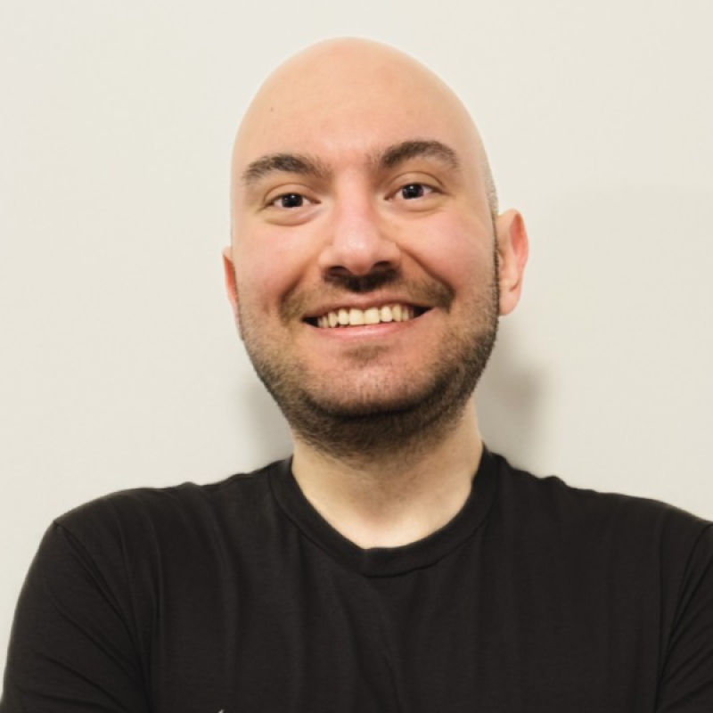

Full-stack engineer · LLM & edge-AI · Stockholm
9+ years taking products from first prototype to production, in large enterprises and fast-moving startups. Backend in Kotlin/Spring Boot, Python and Go; frontend in React, Next.js and Flutter. Right now I co-found Vehicularis, where I build privacy-first LLM and edge-AI products — including an LLM chatbot that runs entirely in the browser.
Every coding-agent CLI in one place. A desktop app (Tauri + xterm.js): add a project folder, then spawn Claude Code, Codex, Cursor, Gemini, opencode or a plain terminal in any directory — tiled side by side, each with a live activity dot and a workflow status you set. Sessions run inside tmux, so they survive closing the app. I built it because I was juggling four agents across five terminal tabs and losing track of which one was actually working.
In-browser AI and productivity suite — 50+ tools where everything runs on your own device. No uploads, no sign-up, works offline. The centerpiece is an LLM chatbot running fully in the browser on the edge, plus generative-AI pipelines around it: Whisper speech-to-text, DistilBART summaries, SpeechT5 text-to-speech, image captioning, and PDF-to-narrated-podcast. Peer-to-peer file sharing and video calls over WebRTC.
Connected-vehicle telemetry platform. Turns raw vehicle data into AI-driven metrics on an AWS pipeline built for low latency and privacy from the start.
Study-prep app for students heading into university. Co-founded it and led development to #1 paid app in Turkey on both the App Store and Google Play (Q4 2018).
acanturgut@outlook.com · Stockholm